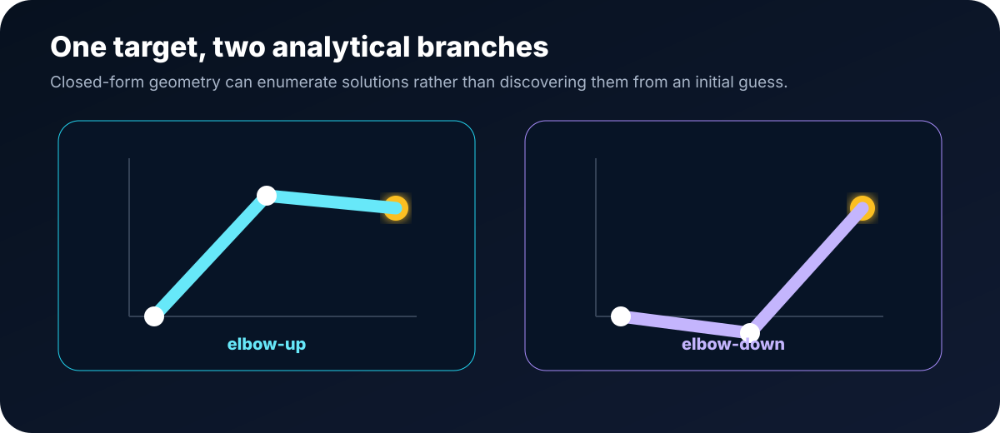
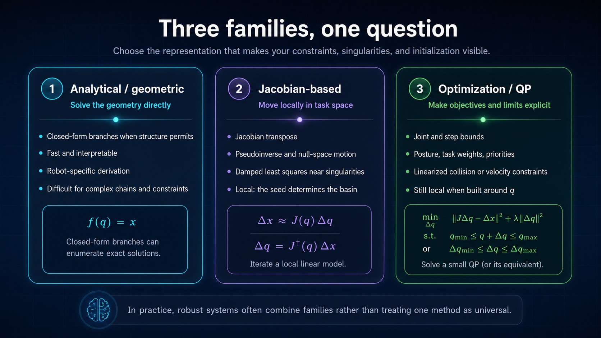
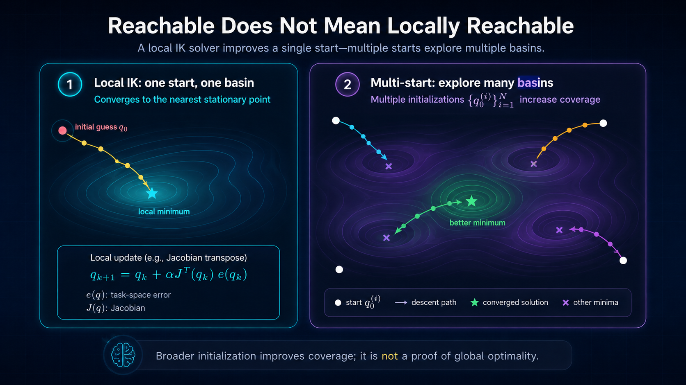
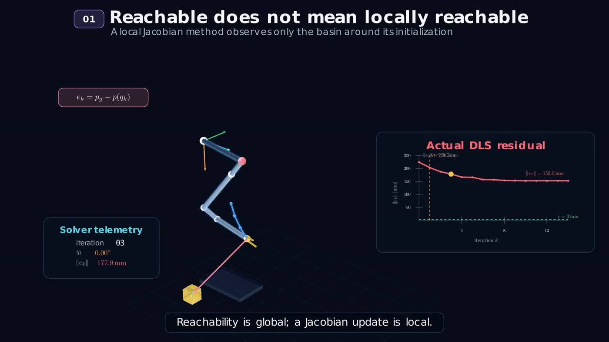
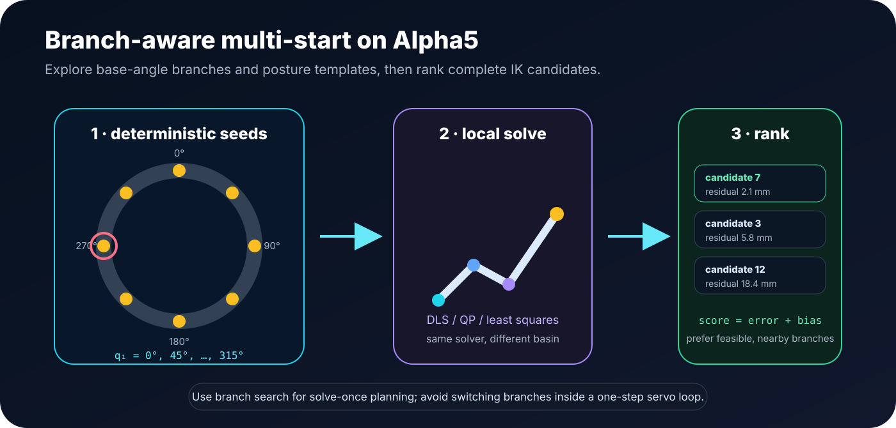
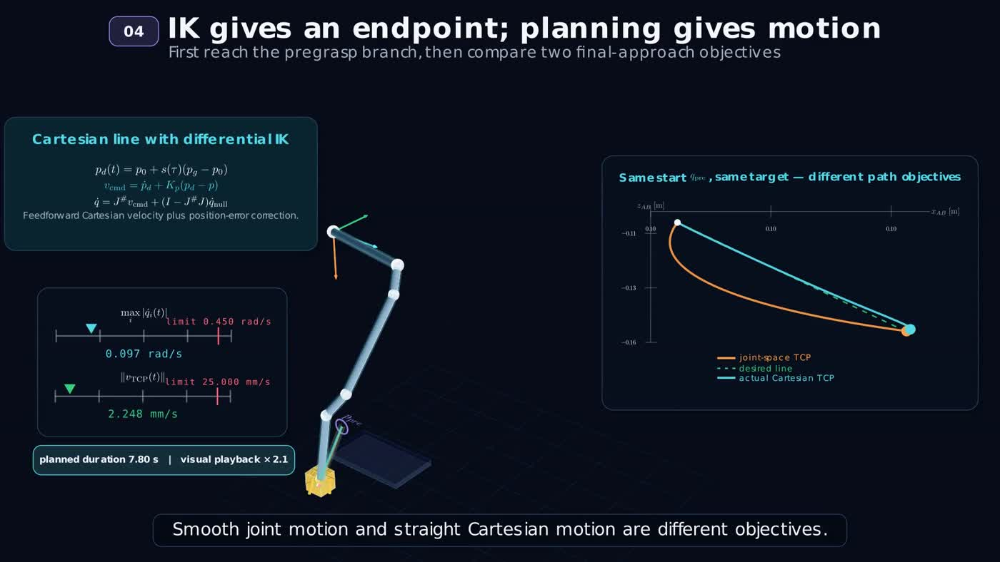
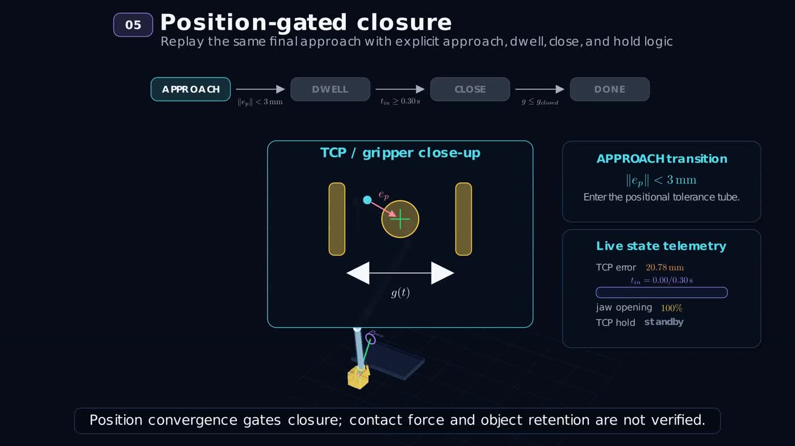

Why inverse kinematics matters for a marine manipulator
Consider a compact Alpha5 arm mounted on a remotely operated or autonomous marine vehicle. A perception system identifies a valve, sample, or object in the robot base frame. The manipulation command is naturally expressed as “place the gripper here,” not as four joint angles.
The Alpha5 implementation used here controls a four-joint arm and a gripper. For a position-only target $p_g\in\mathbb{R}^3$, the arm has one extra degree of freedom: several joint configurations may place the gripper at the same point. That redundancy is useful, but it also creates branches, posture choices, and initialization sensitivity.
What exactly are we solving?
For position IK, a general numerical formulation is
If the target is reachable, the minimum can be zero. If it is outside the workspace or blocked by constraints, the optimizer returns the closest feasible configuration. For a full pose task, the residual combines translation and orientation, often using a Lie-group logarithm for the orientation error.
Three-dimensional residual
$e_p=p_g-p(q)$
Useful when the wrist orientation is free or separately prescribed.
Six-dimensional residual
$e_T=\log\!\left(T(q)^{-1}T_g\right)$
Couples translation and orientation and requires consistent frames and weighting.
Closed-form IK exposes the branches directly
When the mechanism has a suitable structure, geometry can solve the inverse problem without iteration. A planar two-link arm is the clearest example. For a target $(x,y)$, define
The $\pm$ sign produces elbow-up and elbow-down branches. This is the main strength of analytical IK: multiplicity is explicit. The price is that the derivation is robot-specific and becomes difficult for general chains, coupled limits, and extra constraints.

There is no single universal IK algorithm
IK methods differ mainly in how much robot structure they exploit and how explicitly they represent constraints. The most useful mental model is to group them into analytical, Jacobian-based, and optimization-based families.

Excellent when closed-form branches can be derived and enumerated.
Natural for differential motion, visual servoing, and small target updates.
Best when joint bounds, posture costs, task priorities, or other constraints matter.
The Jacobian converts joint motion into end-effector motion
A numerical IK method repeatedly linearizes the forward kinematics around the current configuration:
The cross product has a direct geometric meaning: rotating joint $i$ around axis $a_i$ sweeps the end-effector along the tangent to a circle centered at the joint origin $p_i$.
A simple direction that pulls the robot toward the target
The Jacobian-transpose update uses the task-space error as a virtual force and maps it into joint space:
It is inexpensive, easy to implement, and often effective away from difficult geometries. A practical implementation scales the step, clips each joint increment, and projects the result back into the joint limits. Its limitations are slow convergence, sensitivity to the gain, and the possibility of stagnation.
Jacobian transpose tracking
The real arm and the Stonefish interface are shown side by side while the local update moves the gripper toward the target.
Least squares chooses the joint step that best explains the task error
The Moore–Penrose pseudoinverse solves the local least-squares problem. Near a singularity, however, small task-space errors can demand very large joint motion. Damped least squares regularizes the inversion:
In the Alpha5 implementation, DLS is combined with joint-step clipping and backtracking. A step is accepted only when it does not increase the Cartesian residual. This improves numerical behavior, but it does not remove the local nature of the method.
QP makes constraints part of the update rather than an afterthought
A velocity-level QP solves the same local tracking problem while making bounds explicit:
Additional costs can prefer a nominal posture, and equality or inequality constraints can freeze a joint, impose velocity limits, or encode locally linearized safety conditions. Yet a QP based on the current Jacobian is still a local solver: constraints improve feasibility, not global branch discovery.
Implementation pattern: one bounded QP step
H = J.T @ J + lam * I
g = -(J.T @ error)
lb = maximum(q_min - q, -max_step)
ub = minimum(q_max - q, +max_step)
dq = solve_qp(H, g, lb, ub)
q = clip(q + dq, q_min, q_max)Why a reachable target can end in a nonzero residual
The objective $\lVert p(q)-p_g\rVert^2$ is nonlinear and generally nonconvex. Joint limits split the feasible set, redundant arms admit multiple branches, and a local step may be unable to cross a region where the error temporarily increases. The result is a stalled solver even though another configuration reaches the target.


Use several initial configurations to expose more kinematic branches
The practical solution implemented for Alpha5 is deterministic multi-start IK. Instead of trusting one home configuration, the same local solver is initialized from several base-angle branches and several posture templates. Every converged candidate is evaluated using the true forward-kinematics residual.

The Cartesian residual remains the primary criterion. Joint motion and branch preference are weak tie-breakers. A hard-branch mode can first filter candidates near a requested $q_1$ branch, but the implementation deliberately falls back to the best reachable candidate when that branch is unavailable.
Damped least squares with multiple initializations
The side-by-side real and simulated behavior shows how alternative seeds allow the solver to reach configurations missed from a single initialization.
Use the null space to shape posture without disturbing the main task
When the robot has more controllable joints than task dimensions, the pseudoinverse leaves directions that do not change the end-effector velocity to first order:
The secondary command $\dot q_0$ can move the arm toward a preferred posture, away from a joint limit, or toward higher manipulability. For Alpha5 position IK, joint 4 can also be fixed explicitly when a prescribed wrist orientation is more important than using it as a redundant variable.
IK gives a configuration; planning decides how the robot gets there
Sending the final IK vector directly to a position-controlled robot can produce an abrupt, poorly timed motion. The implementation therefore separates endpoint selection from trajectory generation.
Smooth joint motion
$$q(t)=q_0+s(t)(q_f-q_0)$$ $$s(\tau)=10\tau^3-15\tau^4+6\tau^5$$Zero initial and final joint velocity and acceleration. The end-effector path is generally curved.
Geometric approach path
$$p_d(t)=p_0+s(t)(p_g-p_0)$$ $$\dot q=J_\lambda^\dagger\bigl(\dot p_d+K_p(p_d-p)\bigr)+N\dot q_0$$Tracks an approximately straight TCP path while enforcing Cartesian and joint-speed caps.

Planning in joint space
The complete task combines IK endpoint selection, a smooth trajectory, a controlled approach, and gripper actuation.
Do not close the gripper merely because the planned time has elapsed
A robust manipulation sequence gates closure on measured task-space convergence. The implemented state machine first moves to a pregrasp configuration, approaches slowly, waits until the TCP error remains below a threshold for a dwell interval, and only then closes while holding the target.

Use one mathematical model, but verify every interface convention
The same kinematic core is used in simulation and on the physical arm. The practical difficulty is not only the solver—it is maintaining consistent frames, joint order, limits, units, and command semantics.
User-facing target
$[x_{forward},y_{left},z_{down}]$
Kinematic target
$[x_{forward},y_{down},z_{left}]$
Joint-state interface
Map the selected $q(t)$ into the simulator or real-robot joint names without changing the IK mathematics.
A reliable solve–select–plan–execute workflow
- 1Express the target in the correct base frame.
Verify axis signs, units, and the controlled TCP frame.
- 2Try a local solve from the current configuration.
Use DLS or QP with joint bounds, step limits, and a clear residual tolerance.
- 3Detect stagnation rather than waiting indefinitely.
Monitor residual reduction and accepted-step size.
- 4Run deterministic multi-start when needed.
Cover representative base-angle branches and posture templates.
- 5Rank complete candidate configurations.
Prioritize task residual, feasibility, and continuity with the current robot state.
- 6Plan a timed trajectory to the selected endpoint.
Choose joint-space smoothness or Cartesian path geometry according to the task.
- 7Execute with state feedback and a position gate.
Approach slowly, dwell within tolerance, then close the gripper.
The most important ideas
The Jacobian is a local model
It is powerful for small corrections, but it sees only the neighborhood of the current configuration.
Damping handles singularity—not nonconvexity
DLS stabilizes the inversion while leaving the basin-of-attraction problem intact.
QP handles constraints—not distant branches
A local QP can respect bounds and priorities while still converging to the wrong basin.
Multi-start broadens coverage
It converts initialization from a hidden assumption into an explicit search design.
IK is not planning
A valid endpoint still requires timing, speed, smoothness, collision checking, and execution logic.
Simulation is a verification stage
Stonefish exposes frame and interface errors before the same command path is enabled on the real Alpha5.